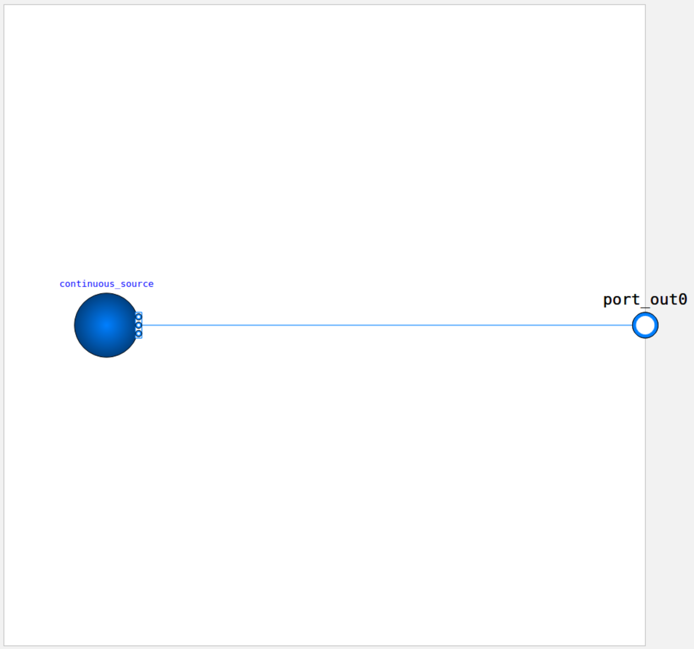
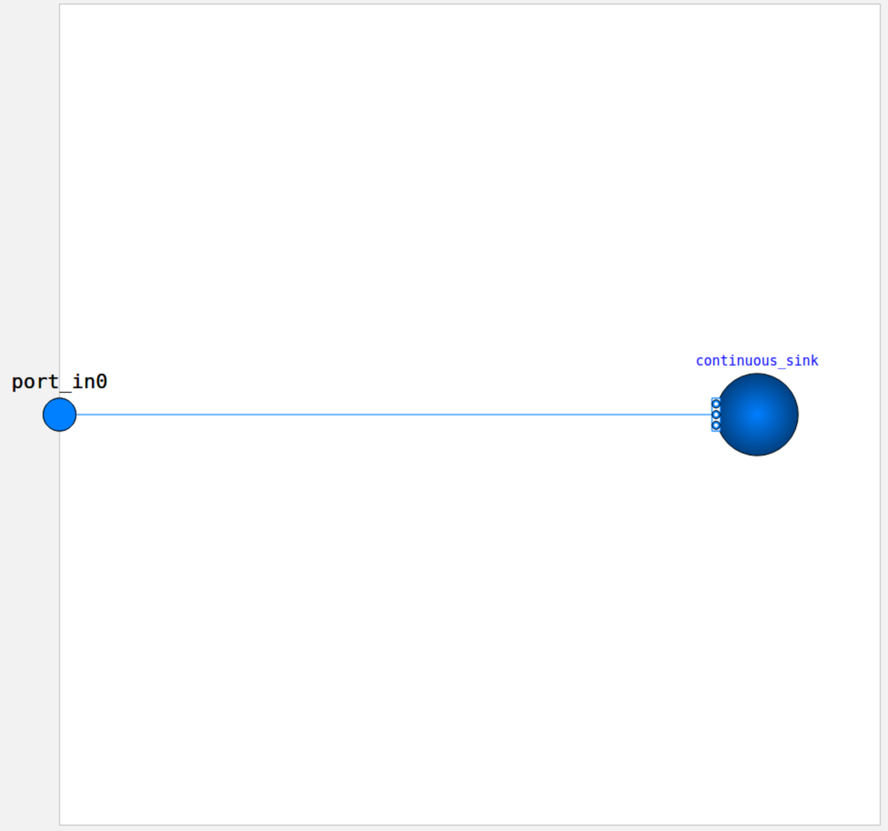

CPS Modules
The HAI-CPS benchmark consists of ten datasets derived from different configurations of a modular Cyber-Physical Process plant.
The process plant features four types of modules that can be interconnected in various ways.
Each module is implemented as an OpenModelica model containing multiple components and controlled by its own automaton.
To enhance the realism of the simulation data, stochastic noise has been introduced into the pump rotational speed (RPM), resulting in fluctuations in volume flow throughout the system. This addition better reflects the inherent variability present in real-world industrial environments.
Below is an overview of the available modules.
Mixer
The Mixer module consists of four tanks:
Three input tanks (B201, B202, B203)
One output tank (B204)
The fluids from the input tanks can be mixed in any ratio within B204. Properties such as temperature and viscosity are propagated through the mixing process.
The automaton executes the following steps:
Fill B201, B202, and B203 via inlet valves
in0,in1, andin2Open outlet valves of the input tanks to transfer fluid into B204
Open the outlet valve of B204 to pass fluid to the next module via
out0
Modelica file (link): models/Mixer.mo
Filter
The Filter module consists of two tanks: B101 and B102.
Fluid in B101 is pumped through a filter (F101), which clogs linearly with the volume flow. The filtered fluid collects in B102 and is drained via out0.
Automaton behavior:
Fill B101
Start filtering until B101 is empty
Drain B102
Modelica file (link): models/Filter.mo
Distill
The Distill module contains:
Three tanks: B101 (input), B102 (residue), B103 (distillate)
One distillation unit
Fluid is pumped from B101 into the distillation unit, where it is separated into components.
The vaporized (distilled) components are cooled and collected in B103, while the remaining residue is cooled and collected in B102.
Automaton steps:
Fill B101
Pump fluid into the distill unit
Heat and separate contents after B101 is empty
Drain residue into B102
Drain B102 and B103 via
out0andout1
Modelica file (link): models/Distill.mo
Bottling
The Bottling module simulates a bottling process using two tanks: B401 and B402.
Automaton steps:
Fill B401
Pump fluid into B402
Perform bottling by pulsing the outlet valve of B402 in fixed intervals
Modelica file (link): models/Bottling.mo
Source
The Source module continuously outputs a flow of fluid to simulate a live feed into the system.
Modelica file (link): models/Source.mo
Sink
The Sink module serves as a continuous fluid consumer, simulating a live drain from the system.
Modelica file (link): models/Sink.mo